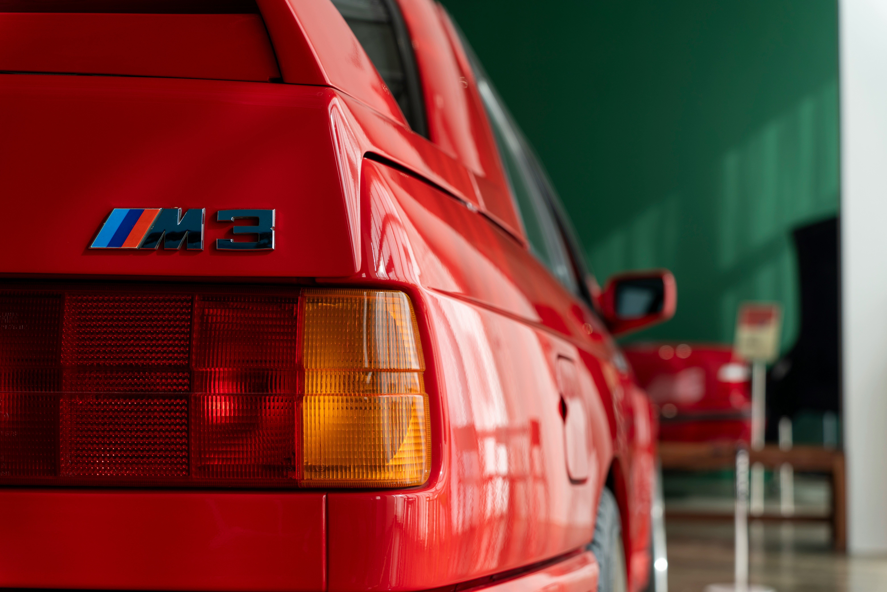
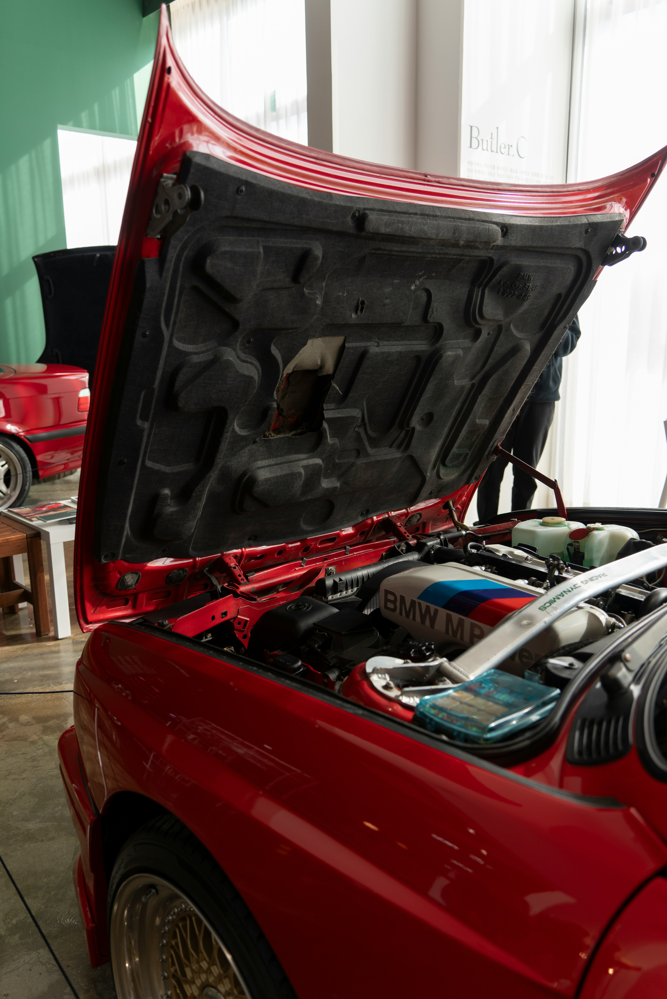
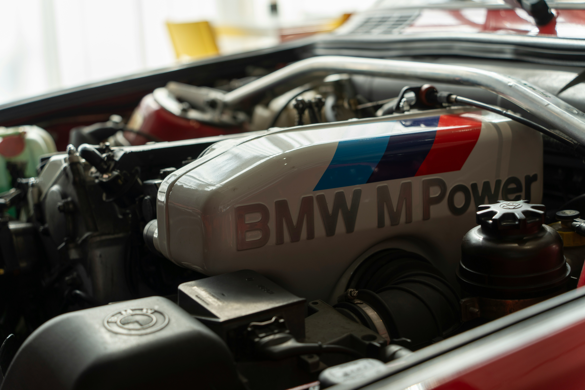
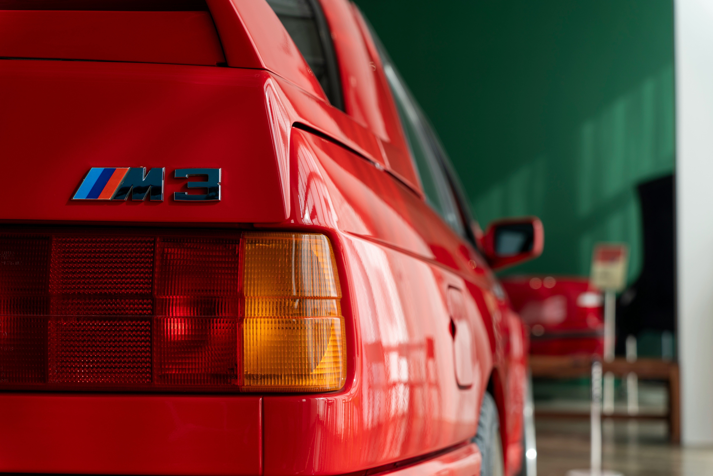
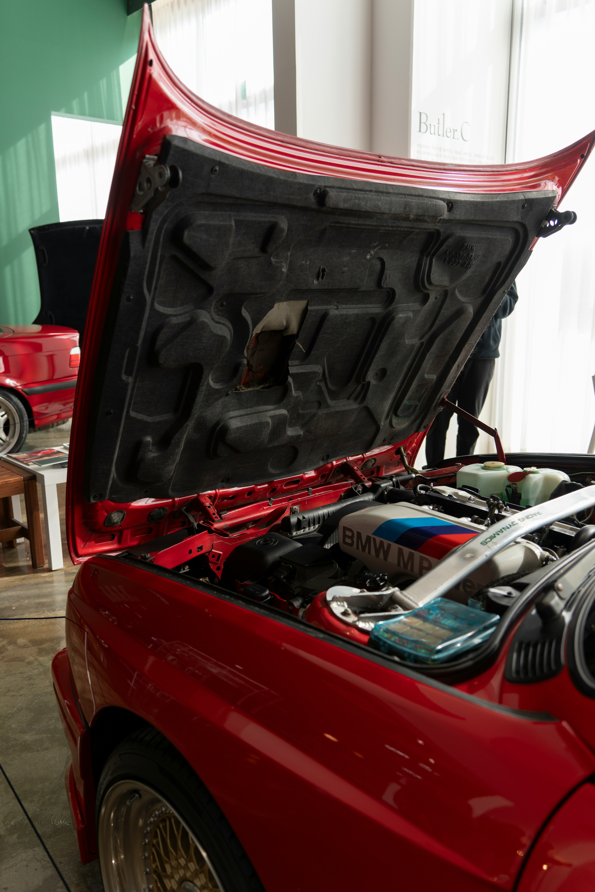
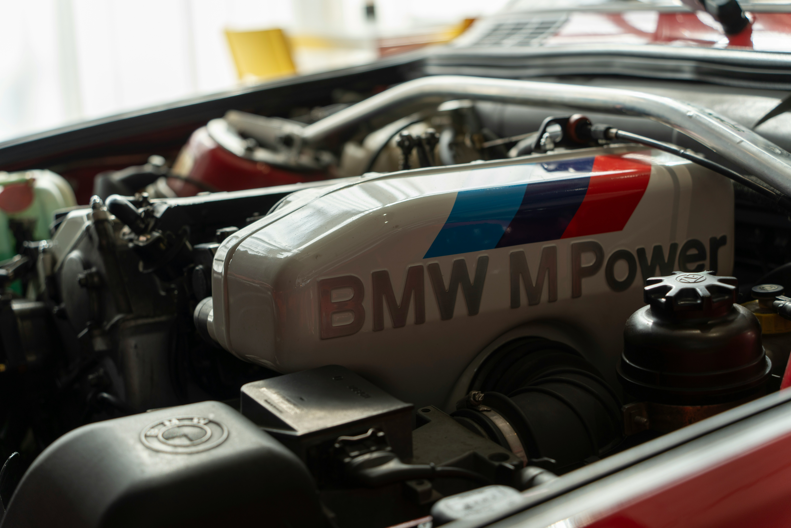

1988 BMW e30 M3
 





Price: ZAR P.O.A
Year: 1988
Mileage: 20 000 miles
Description: The BMW E30 M3, introduced in 1986, is a legendary sports car that was developed for Group A touring car racing. It features a 2.3-liter four-cylinder engine producing around 200 horsepower, a stiffer chassis, and unique aerodynamic enhancements. Known for its exceptional handling and performance, the E30 M3 quickly became an icon both on the road and the racetrack. If you have any more questions or need further details, feel free to ask!